|
IMS Question and Test Interoperability Implementation GuideVersion 2.1 Public Draft (revision 2) Specification |
Copyright © 2006 IMS Global Learning Consortium, Inc. All Rights Reserved.
The IMS Logo is a registered trademark of IMS GLC.
Document Name: IMS Question and Test Interoperability Implementation Guide
| Date Issued: |
8 June 2006 |
|
Caution: this specification is incomplete in its current state. The IMS QTI project group is in the process of evolving this specification based on input from market participants. Suppliers of products and services are encouraged to participate by contacting Mark McKell at mmckell@imsglobal.org. This specification will be superseded by an updated release based on the input of the project group participants. Please note that supplier's claims as to implementation of QTI v2.1 and conformance to it HAVE NOT BEEN VALIDATED by IMS GLC. While such suppliers are likely well-intentioned, IMS GLC member organizations have not yet put in place the testing process to validate these claims. IMS GLC currently grants a conformance mark to the Common Cartridge profile of QTI v1.2.1. The authoritative source of products and services that meet this conformance is contained in the IMS online product directory http://www.imsglobal.org/ProductDirectory/directory.cfm Thank you for your interest in and support of IMS QTI. IPR and Distribution Notices Recipients of this document are requested to submit, with their comments, notification of any relevant patent claims or other intellectual property rights of which they may be aware that might be infringed by any implementation of the specification set forth in this document, and to provide supporting documentation. IMS takes no position regarding the validity or scope of any intellectual property or other rights that might be claimed to pertain to the implementation or use of the technology described in this document or the extent to which any license under such rights might or might not be available; neither does it represent that it has made any effort to identify any such rights. Information on IMS's procedures with respect to rights in IMS specifications can be found at the IMS Intellectual Property Rights web page: http://www.imsglobal.org/ipr/imsipr_policyFinal.pdf. Copyright © 2006 IMS Global Learning Consortium. All Rights Reserved. If you wish to copy or distribute this document, you must complete a valid Registered User license registration with IMS and receive an email from IMS granting the license to distribute the specification. To register, follow the instructions on the IMS website: http://www.imsglobal.org/specificationdownload.cfm. This document may be copied and furnished to others by Registered Users who have registered on the IMS website provided that the above copyright notice and this paragraph are included on all such copies. However, this document itself may not be modified in any way, such as by removing the copyright notice or references to IMS, except as needed for the purpose of developing IMS specifications, under the auspices of a chartered IMS project group. Use of this specification to develop products or services is governed by the license with IMS found on the IMS website: http://www.imsglobal.org/license.html. The limited permissions granted above are perpetual and will not be revoked by IMS or its successors or assigns. THIS SPECIFICATION IS BEING OFFERED WITHOUT ANY WARRANTY WHATSOEVER, AND IN PARTICULAR, ANY WARRANTY OF NONINFRINGEMENT IS EXPRESSLY DISCLAIMED. ANY USE OF THIS SPECIFICATION SHALL BE MADE ENTIRELY AT THE IMPLEMENTER'S OWN RISK, AND NEITHER THE CONSORTIUM, NOR ANY OF ITS MEMBERS OR SUBMITTERS, SHALL HAVE ANY LIABILITY WHATSOEVER TO ANY IMPLEMENTER OR THIRD PARTY FOR ANY DAMAGES OF ANY NATURE WHATSOEVER, DIRECTLY OR INDIRECTLY, ARISING FROM THE USE OF THIS SPECIFICATION. |
|
This document contains examples of QTI Version 2 in action. Some of the examples are illustrated by screen shots. All screen shots are taken from a single delivery engine [SMITH] developed during the public draft review period of this specification. They are designed to illustrate how a system might implement the specification and are not designed to be prescriptive. Other types of rendering are equally valid.
To help determine whether or not a piece of assessment content that comprises multiple interactions should be represented as a single assessmentItem (known as a composite item in QTI) the strength of the relationship between the interactions should be examined. If they can stand alone then they may best be implemented as separate items, perhaps sharing a piece of stimulus material like a picture or a passage of text included as an object. If several interactions are closely related then they may belong in a composite item, but always consider the question of how easy it is for the candidate to keep track of the state of the item when it contains multiple related interactions. If the question requires the user to scroll a window on their computer screen just to see all the interactions then the item may be better re-written as several smaller related items. Consider also the difficulty faced by a user interacting with the item through a screen-reader, an item with many possible of points of interaction may be overwhelming in such an interface.
Unattended Luggage
examples/items/choice.xml
Figure 3.1 Unattended Luggage (Illustration).
This example illustrates the choiceInteraction being used to obtain a single response from the candidate.
Notice that the candidate's response is declared at the top of the item to be a single identifier and that the values this identifier can take are the values of the corresponding identifier attributes on the individual simpleChoices. The correct answer is included in the declaration of the response. In simple examples like this one there is just one response variable and one interaction but notice that the interaction must still be bound to the response declaration using the responseIdentifier attribute of choiceInteraction.
The item is scored using one of the standard response processing templates, Match Correct.
Unattended Luggage (with fixed choice)
examples/items/choice_fixed.xml
This example is a variation on the previous example and illustrates the use of the fixed attribute to fix the location of one of the options in the item.
Unattended Luggage (DTD)
examples/items/choice_doctype.xml
This example is identical to Unattended Luggage except that it illustrates the use of the DTD binding instead of the XSD. The XSD form is preferred and the alternative binding method using the DTD is illustrated for this example only.
Composition of Water
examples/items/choice_multiple.xml
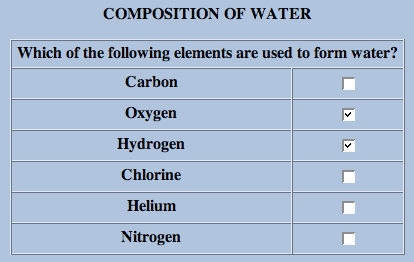
Figure 3.2 Composition of Water (Illustration).
This example illustrates the choiceInteraction being used to obtain multiple responses from the candidate.
Notice that the candidate's response is declared to have multiple cardinality and the correct value is therefore composed of more than one value. This example could have been scored in the same way as the previous one, with 1 mark being given for correctly identifying the two correct elements (and only the two correct elements) and 0 marks given otherwise; however, a method that gives partial credit has been adopted instead through the use of the standard response processing template Map Response. This template uses the RESPONSE's mapping to sum the values assigned to the individual choices. As a result, identifying the correct two choices (only) scores 2 points. Notice that selecting a third (incorrect) choice reduces the score by 2 (with the exception of Chlorine) resulting in 0 as unmapped keys are mapped to the defaultValue. To prevent an overall negative score bounds are specified too. The penalty for selecting Chlorine is less, perhaps to reflect its role as a common water additive.
Also note that SCORE needs to be set to float because of the use of the map_response template which returns a float.
Chocolate Milk
examples/items/choice_multiple_chocolade.xml
This example illustrates the choiceInteraction being used to obtain multiple responses from the candidate with two correct sets of responses.
Grand Prix of Bahrain
examples/items/order.xml
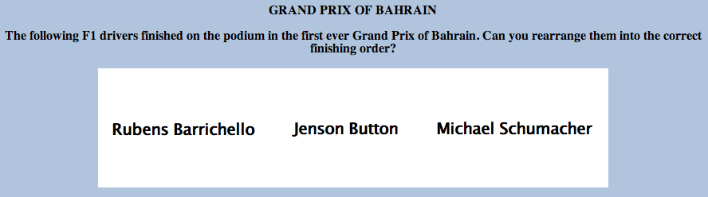
Figure 3.3 Grand Prix of Bahrain (Illustration).
This example illustrates the orderInteraction. The candidate's response is declared to have ordered and the correct value is therefore composed of an ordered list of value. The shuffle attribute tells the delivery engine to shuffle the order of the choices before displaying them to the candidate. Note that the fixed attribute is used to ensure that the initially presented order is never the correct answer. The question uses the standard response processing template Match Correct to score 1 for a completely correct answer and 0 otherwise.
Shakespearian Rivals
examples/items/associate.xml
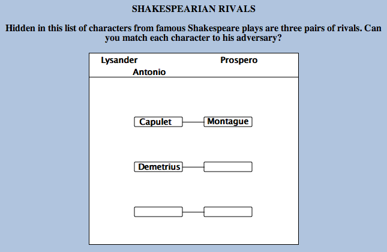
Figure 3.4 Shakespearian Rivals (Illustration).
This example illustrates the associateInteraction. The candidate's response is declared to have pair because the task involves pairing up the choices. The maxAssociations attribute on associateInteraction controls the maximum number of pairings the candidate is allowed to make overall. Individually, each choice has a matchMax attribute that controls how many pairings it can be part of. The number of associations that can be made in an associateInteraction is therefore constrained by two methods—in this case they have the same overall effect but this needn't be the case.
The associations created by the candidate are not directed, the pair base-type is an undirected pair so when comparing responses "A P" would be treated as a match for "P A"—the distinction has no meaning to the interaction even though the physical process used by the candidate might be directional, for example, drawing a line between the choices.
Characters and Plays
examples/items/match.xml
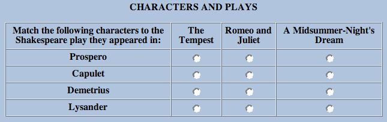
Figure 3.5 Characters and Plays (Illustration).
This example illustrates the matchInteraction. This time the candidate's response is declared to have directedPair because the task involves pairing up choices from a source set into a target set. In this case characters from plays with the names of the plays from which they are drawn. Notice that matchMax on the characters is one because each character can be in only one play (in fact, Shakespeare often reused character names but we digress) but it is four on the plays because each play could contain all the characters. For example, Demetrius and Lysander were both in A Midsummer-Night's Dream, so in the correct response that play has two associations. In the mapping used for response processing these two associations have been awarded only a half a mark each.
Richard III (Take 1)
examples/items/gap_match.xml
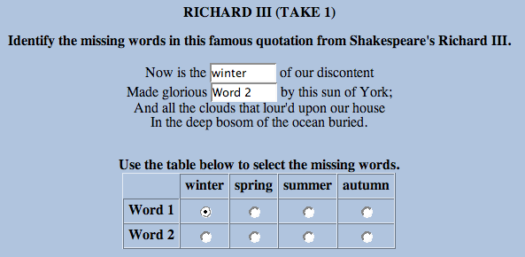
Figure 3.6 Richard III (Illustration 1).
This example illustrates the gapMatchInteraction. This interaction is similar to matchInteraction except that the choices in the second set are gaps in a given passage of text and the task involves selecting choices from the first set and using them to fill the gaps. The same attributes are involved in controlling which, and how many, pairings are allowed though there is no matchMax for the gaps because they can only ever have one associated choice. The scoring is again done with a mapping.
Richard III (Take 2)
examples/items/inline_choice.xml
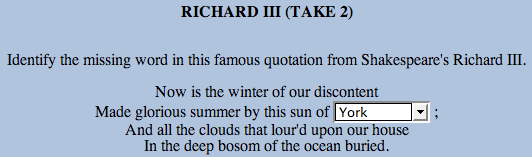
Figure 3.7 Richard III (Illustration 2).
The Richard III (Take 1) example above demonstrated the use of filling gaps from a shared stock of choices. In cases where you only have one gap, or where you have multiple gaps that are to be filled independently, each from its own list of choices, then you use an inlineChoice interaction.
Richard III (Take 3)
examples/items/text_entry.xml
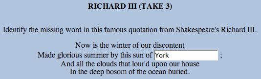
Figure 3.8 Richard III (Illustration 3).
The third, and final method of filling gaps is to use an textEntryInteraction which requires the candidate to construct their own response, typically by typing it in. Notice that a guide to the amount of text to be entered is given in the expectedLength attribute—though candidates should be allowed to enter more if desired.
The scoring for this item could have just matched the correct response but actually uses a mapping to enable partial credit for york (spelled without a capital letter). When mapping strings the mapping always takes place case sensitively. This example also illustrates the use of the mapping when the response only has single cardinality.
Writing a Postcard
examples/items/extended_text.xml
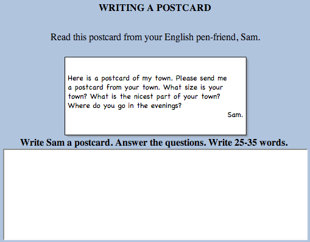
Figure 3.9 Writing a Postcard (Illustration).
If an extended response is required from the candidate then the extendedTextInteraction is appropriate. Notice that this example does not contain a responseProcessing section because the scoring of extended text responses is beyond the scope of this specification.
Olympic Games
examples/items/hottext.xml
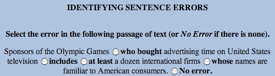
Figure 3.10 Olympic Games (Illustration).
This example illustrates the hottextInteraction. This interaction presents a passage of text with some hot words/phrases highlighted and selectable by the candidate. It differs from the choiceInteraction in that the choices have to be presented in the context of the surrounding text.
UK Airports
examples/items/hotspot.xml
Figure 3.11 UK Airports in Unanswered State (Illustration).
Figure 3.12 UK Airports in Answered State (Illustration).
This example illustrates the hotspotInteraction. This is very similar to the hottextInteraction except that instead of having to select hot areas embedded in a passage of text the candidate has to select hotspots of a graphical image.
Note that the response is of type identifier and that each individual hotspotChoice associates an identifier with an area of the image.
Where is Edinburgh?
examples/items/select_point.xml
Figure 3.13 Where is Edinburgh? (Illustration).
This example illustrates the selectPointInteraction. The RESPONSE is declared to be a single point that records the coordinates of the point on the map marked by the candidate. The correctResponse is given in the declaration too, however, for this type of question it is clearly unreasonable to expect the candidate to click exactly on the correct point and there would be too many values to build a workable mapping. To get around this problem an areaMapping is used instead, this allows one or more areas of the coordinate space to be mapped to a numeric value (for scoring). In this example, just one area is defined: a circle with radius 8 pixels centered on the correct (optimal) response. The standard response processing template Map Response Point is used to set the score using the areaMapping.
Flying Home
examples/items/graphic_order.xml
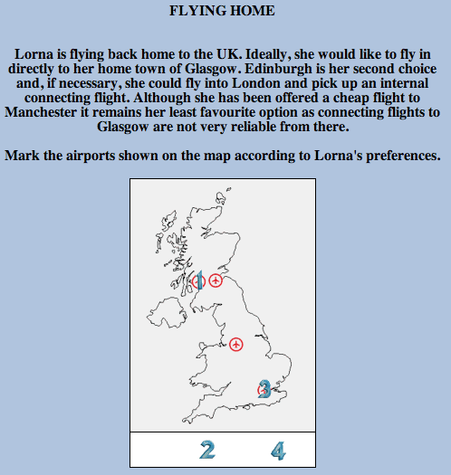
Figure 3.14 Flying Home (Illustration).
This example illustrates the graphicOrderInteraction. The task is similar to Grand Prix of Bahrain except that the choices are presented as hotspots on a graphic image.
Low-cost Flying
examples/items/graphic_associate.xml
Figure 3.15 Low-cost Flying Unanswered State (Illustration).
Figure 3.16 Low-cost Flying Answered State (Illustration).
This example illustrates the graphicAssociateInteraction. The task is similar to Shakespearian Rivals except that the choices are presented as hotspots on a graphic image. Notice that matchMax is set to three for each of the hotspots allowing the candidate to associate each hotspot up to three times (in other words, with all the other hotspots if desired).
Airport Tags
examples/items/graphic_gap_match.xml
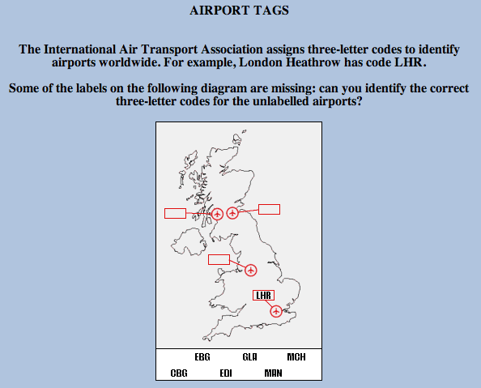
Figure 3.17 Airport Tags (Illustration).
This example illustrates the graphicGapMatchInteraction. The task is similar to Richard III (Take 1) except that the first set of choices are images and the second set are gaps within a larger background image. In graphical system that supports dragging this would typically be implemented using drag and drop.
Airport Locations
examples/items/position_object.xml

Figure 3.18 Airport Locations (Illustration).
This example illustrates the positionObjectInteraction. It has a lot in common with Where is Edinburgh? except that the 'point' is selected by positioning a given object on the image (the stage). Notice that the stage is specified outside of the interaction. This allows a single stage to be shared amongst multiple position object interactions.
Jedi Knights
examples/items/slider.xml
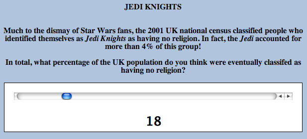
Figure 3.19 Jedi Knights (Illustration).
This example illustrates the sliderInteraction. It is used in this example to obtain a percentage estimate. The interaction is bound to an integer response which can then be scored using the standard Map Response response processor.
La casa di Giovanni
examples/items/drawing.xml
This example illustrates the drawingInteraction. Notice that the RESPONSE is declared to be of type file. The drawing takes place on a required pre-supplied canvas, in the form of an existing image, which is also used to determine the appropriate size, resolution and image type for the candidate's response.
The Chocolate Factory (Take 1)
examples/items/upload.xml
This example illustrates the uploadInteraction. The RESPONSE is again declared to be of type file. The candidate is provided with a mechanism to upload their own spreadsheet in response to the task, response processing for file-based questions is out of scope of this specification.
The Chocolate Factory (Take 2)
examples/items/upload_composite.xml
This example extends The Chocolate Factory (Take 1) with an additional text response field that can be marked objectively.
Grand Prix of Bahrain (Partial Scoring)
examples/items/order_partial_scoring.xml
This example extends Grand Prix of Bahrain to include partial scoring. With three drivers to place on the podium there are 6 possible responses that the candidate can make, only one of which is correct. Previously, the correct answer scored 1 and all other responses scored 0. Now, the correct answer scores 2. Correctly placing Michael Schumacher first scores 1 if the other two drivers have been muddled up. Placing Barichello or Button first scores 0 (all other combinations).
Response processing consists of a sequence of rules that are carried out, in order, by the response processor. A responseCondition rule is a special type of rule which contains sub-sequences of rules divided into responseIf, responseElseIf and responseElse sections. The response processor evaluates the expressions in the responseIf and responseElseIf elements to determine which sub-sequence to follow. In this example, the responseIf section is followed only if the variable with identifier RESPONSE matches the correct response declared for it. The responseElseIf section is followed if RESPONSE matches the response explicitly given (which places the correct driver 1st but confuses the other two). Finally, the responseElse section is followed if neither of the previous two apply. The responseElse section has no corresponding expression of course. The setOutcomeValue element is just a responseRule that tells the processor to set the value of the specified outcome variable to the value of the expression it contains.
The variable, correct, and baseValue elements are examples of simple expressions. In other words, expression that are indivisible. In contrast, the match and ordered elements are examples of operators. Operators are expressions that combine other expressions to form new values. For example, match is used to form a boolean depending on whether or not two expressions have matching values.
Feedback consists of material presented to the candidate conditionally based on the result of responseProcessing. In other words, feedback is controlled by the values of outcome variables. There are two types of feedback material, modal and integrated. Modal feedback is shown to the candidate after response processing has taken place and before any subsequent attempt or review of the item. Integrated feedback is embedded into the itemBody and is only shown during subsequent attempts or review.
Mexican President
examples/items/feedback.xml
In this example, a straightforward multi-choice question declares an additional outcome variable called FEEDBACK which is used to control the visibility of both integrated feedback (the feedbackInline elements) and modalFeedback. The feedback shown depends directly on the response given by the candidate in this case so FEEDBACK is simply set to the value of RESPONSE directly.
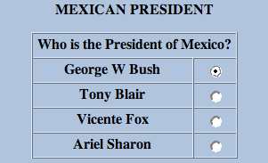
Figure 3.20 Mexican President Before Submission (Illustration).
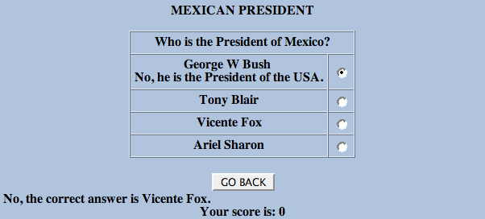
Figure 3.21 Mexican President After Submission (Illustration).
Adaptive items are a new feature of version 2 that allows an item to be scored adaptively over a sequence of attempts. This allows the candidate to alter their answer following feedback or to be posed additional questions based on their current answer. Response processing works differently for adaptive items. Normally (for non-adaptive items) each attempt is independent and the outcome variables are set to their default values each time responseProcessing is carried out. For adaptive items, the outcome variables retain their values across multiple attempts and are only updated by subsequent response processing. This difference is indicated by the value of the adaptive attribute of the assessmentItem. Adaptive items must of course provide feedback to the candidate in order to allow them to adjust their response(s).
Mexican President with adaptive feedback
examples/items/feedback_adaptive.xml
In this adaptive example, the candidate receives different Mexican President for each attempt. The item allows for four incorrect attempts before the correct answer is provided.
Monty Hall (Take 1)
examples/items/adaptive.xml
This example takes a famous mathematical problem and presents it to the user as a game. The feedbackBlock element, in association with a number of outcome variables is used to control the flow of the story, from the opening gambit through to whether or not you have won a prize. When the story concludes you are asked about the strategy you adopted. Notice that the scoring for the question is based on the actual strategy you took (one mark) and your answer to the final question (two marks). If you choose a bad strategy initially you are always punished by losing the game. If you feel that this is cheating take a look at a more realistic version of the same question which combines adaptivity with the powerful feature of item templates: Monty Hall (Take 2).
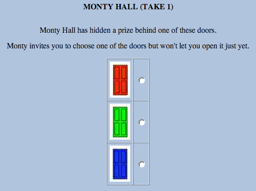
Figure 3.22 Monty Hall First Attempt (Illustration).
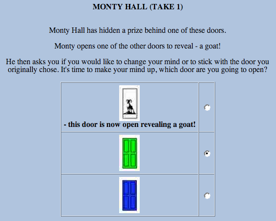
Figure 3.23 Monty Hall Second Attempt (Illustration).
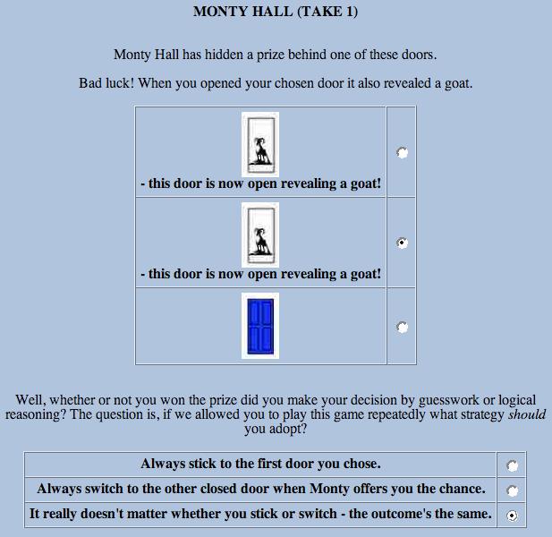
Figure 3.24 Monty Hall Third Attempt (Illustration).
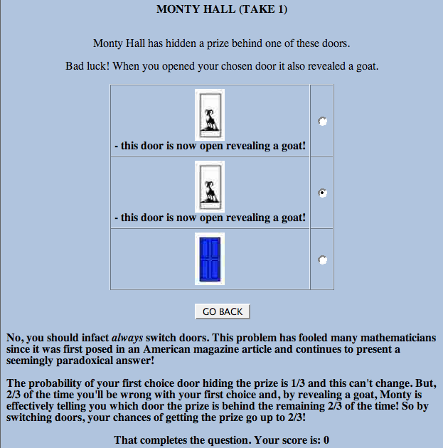
Figure 3.25 Monty Hall Final Feedback (Illustration).
In the previous example, the default method of ending an attempt was used to progress through the item, however, sometimes it is desirable to provide alternative ways for the candidate to end an attempt. The most common requirement is the option of requesting a hint instead of submitting a final answer. QTI provides a flexible way to accommodate these alternative paths through the special purpose endAttemptInteraction.
Mexican President with hints
examples/items/hint.xml
In this example, Mexican President is extended to provide both feedback and the option of requesting a hint. The endAttemptInteraction controls the value of the response variable HINTREQUEST - which is true if the attempt ended with a request for a hint and false otherwise.
Item templates are a new feature of version 2 that allows many similar items to be defined using the same assessmentItem.
Digging a Hole
examples/items/template.xml
This example contains a simple textEntryInteraction but the question (and the correct answer) varies for each item session. In addition to the usual RESPONSE and SCORE variables a number of template variables are declared. Their values are set by a set of templateProcessing rules. Template processing is very similar to response processing. The same condition model and expression language are used. The difference is that templateRules set the values of template variables and not outcome variables. Notice that the declaration of RESPONSE does not declare a value for the correctResponse because the answer varies depending on which values are chosen for A and B. Instead, a special rule is used, setCorrectResponse in the template processing section.
The randomInteger element represents a simple expression that selects a random integer from a specified range. The random element represents an operator that selects a random value from a container.
The itemBody displays the values of the template variables using the printedVariable element.
Mick's Travels
examples/items/template_image.xml
Sometimes it is desirable to vary some aspect of an item that cannot be represented directly by the value of a template variable. For example, in "Mick's Travels", the itemBody contains an illustration that needs to be varied according to the value chosen for a template variable. To achieve this three templateInline elements are used, each one enclosing a different img element. This element (along with the similar templateBlock) has attributes for controlling its visibility with template variables in the same way as outcome variables are used to control the visibility of feedback.
Item templates can be combined with adaptive items too.
Monty Hall (Take 2)
examples/items/adaptive_template.xml
In Monty Hall (Take 1) we cheated by fixing the game so that the wrong strategy always lost the candidate the prize (and the first mark). In this version we present a more realistic version of the game using an item template. The same outcome variables are defined to control the story and the feedback given but this time a templateDeclaration is used to declare the variable PRIZEDOOR. The templateProcessing rules are then used to preselect the winning door at random making the game more realistic. The responseProcessing rules are a little more complicated as the value of PRIZEDOOR must be checked (a) to ensure that Monty doesn't open the prize winning door after the candidate's first choice and (b) to see if the candidate has actually won the "fantastic prize".
In this example, using the correct strategy will still lose the candidate the prize 1/3 of the time (though they always get the mark). Do you think that the outcome of the game will effect the response to the final strategy question?
It is often desirable to ask a number of questions all related to some common stimulus material such as a graphic or a passage of text. Graphic files are always stored separately and referenced within the markup using img or object elements making them easy to reference from multiple items but passages of text can also be treated this way. The object element allows externally defined passages (either as plain text files or HTML markup) to be included in the itemBody.
The following two example demonstrate this use of a shared material object.
Orkney Islands Q1
examples/items/orkney1.xml
Orkney Islands Q2
examples/items/orkney2.xml
Associating a stylesheet with an item simply involves using the stylesheet element within an assessmentItem. The Orkney Islands examples above use this element to associate a stylesheet written using the CSS2 language. Notice that the class attribute is used to divide the item's body into two divisions that are styled separately, the shared material appearing in a right-hand pane and the instructions and question appearing in a left-hand pane.
Orkney Islands Stylesheet
examples/items/shared/orkney.css
This stylesheet also demonstrates a possible approach to providing absolute positioning in QTI version 2 - something which is no longer supported directly by the item information model. In version 1, material elements could have their coordinates set explicitly (see the Migration Guide for more information about migrating content that used this feature).
The XHTML object element is designed to support the graceful degradation of media objects. The HTML 4.01 specification (the basis for [XHTML]) says "If the user agent is not able to render the object for whatever reason (configured not to, lack of resources, wrong architecture, etc.), it must try to render its contents."
Writing a Postcard (Take 2)
examples/items/nested_object.xml
This example is the same as Writing a Postcard except that the picture of the postcard is provided in two different formats. Firstly as an encapsulated PostScript file (EPS) and then, alternatively, as a PNG bitmapped image. Finally, if the delivery engine is unable to handle both offered image types the text of the postcard can be displayed directly. Item authors should consider using this technique for maintaining images suitable for a variety of different output media, e.g., paper, high-resolution display, low-resolution display, etc.
The Orkney Islands Stylesheet illustrates the way styles can be applied to the XHTML elements that defined the structure of the item's body. The class attribute can also be applied to interactions and many of the common formatting concepts will still be applicable (font size, color, etc.). Delivery engines may also use this attribute to choose between multiple ways of presenting the interaction to the candidate—though the vocabulary for class attributes on interactions is currently beyond this specification.
The QTI Questionnaire
examples/items/likert.xml
This example illustrates an item that is used to present a set of choices commonly known as the likert scale used to obtain responses to attitude-based questions. The question is represented by a normal choiceInteraction but the class attribute of the itemBody is set to likert to indicate to the delivery engine that it should use an appropriate layout for the question, e.g., using a single line for the prompt and the choices with each choice at a fixed tab stop. By applying the style class to the whole of the item body, a delivery engine that renders multiple likert items together might be able choose a more compact rendering. Note that in this example the responseProcessing is absent, there is no right answer!
Relativity
examples/items/math.xml
This simple example illustrates the inclusion of a mathematical expression marked up with MathML into an item.
The format attribute of printedVariable profiles the formatting rules described by the C standard. The following table illustrates the main features. Spaces are show as the '_' (underscore) character to improve readability
| Format specification | Input | Formatted output | Notes |
|---|---|---|---|
| %i | -987 | -987 | Simple signed decimal format. |
| %.4i | -987 | -0987 | Precision specifies the minimum number of digits in i, o, x and X formats and defaults to no minimum. |
| %.0i | 0 | When formatting zero with a precision of 0 no digits are output (i, o, x and X formats only). | |
| %8i | 987 | _____987 | Field-width set manually to 8 results in five leading spaces. |
| %2i | 987 | 987 | Field-width set manually to 2 is insufficient so ignored. |
| %-8f | 987 | 987_____ | Hyphen flag forces left field alignment resulting in five trailing spaces. |
| %08i | 987 | 00000987 | Zero flag forces zero-padding resulting in five leading zeros. |
| %+i | 987 | +987 | Plus flag leads positive numbers with plus sign (excluding o, x and X formats). |
| %_i | 987 | _987 | Space flag leads positive numbers with space (excluding o, x and X formats). |
| %o | 987 | 1733 | Octal format, number must be positive. |
| %#o | 987 | 01733 | # flag ensures at least one leading 0 for o format. |
| %x | 987 | 3db | Hex format (lower case), number must be positive. |
| %#x | 987 | 0x3db | # flag always displays leading 0x for x format. |
| %X | 987 | 3DB | Hex format (upper case), number must be positive |
| %#X | 987 | 0X3DB | # flag always displays leading 0X for X format. |
| %f | 987.654 | 987.654000 | The precision specifies number of decimal places to display for f format and defaults to 6. |
| %.2f | 987.654 | 987.65 | Precision set manually to 2. |
| %#.0f | 987 | 987. | # flag forces trailing point for f, e, E, g, G, r and R formats. |
| %e | 987.654 | 9.876540e+02 | Forces use of scientific notation. The precision specifies number of figures to the right of the point for e and E formats and defaults to 6. |
| %.2e | 987.654 | 9.88e+02 | Precision set manually to 2. |
| %E | 987.654 | 9.876540E+02 | Forces use of scientific notation (upper case form). |
| %g | 987654.321 | 987654 | Rounded to precision significant figures (default 6) and displayed in normal form when precision is greater than or equal to the number of digits to the left of the point. |
| %g | 987 | 987 | Trailing zeros to the right of the point are removed. |
| %g | 987654321 | 9.87654e+08 | Scientific form used when required. |
| %g | 0.0000987654321 | 9.87654e-05 | Scientific form also used when 4 or more leading zeros are required to the right of the point. |
| %#g | 987 | 987.000 | # flag also forces display of trailing zeros (up to precision significant figures) in g and G formats. |
| %G | 0.0000987654321 | 9.87654E-05 | As for g but uses upper case form. |
| %r | 0.0000987654321 | 0.0000987654 | The same as g except that leading zeros to the right of the point are not limited. |
| %R | 0.0000987654321 | 0.0000987654 | The same as G except that leading zeros to the right of the point are not limited. |
Sets of Items With Leading Material
examples/tests/rtest01.xml
This example illustrates a test consisting of a set of three items (rtest01-set01.xml, rtest01-set02.xml, rtest01-set02.xml) sharing a single fragment of leading material (rtest01-fragment.xml). The fragment is included in each of the assessmentItems in the set by using the XInclude mechanism.
The submission mode is set to individual mode requiring the candidate to submit their responses on an item-by-item basis.
The navigation mode is set to linear mode restricting the candidate to attempt each item in turn. Once the candidate moves on they are not permitted to return.
Arbitrary Collections of Item Outcomes
examples/tests/rtest02.xml
This example illustrates the use of two assessmentSections (sectionA and sectionB) and one subsection (sectionB1). Both sectionA and sectionB are visible, meaning that they are identifiable by the candidate. Conversely, sectionB1 is not identifiable as a section.
The submission mode is set to simultaneous. The candidate's responses are all submitted together at the end of the testPart (in this case effectively meaning at the end of the assessmentTest).
The navigation mode is set to nonlinear mode allowing the candidate to navigate to any item in the test at any time.
The test uses weights to determine the contribution of the individual item score to the overall test score. In this example the weight of 0 for item160 means that its score isn't taken into account when calculating the overall test score. The weight of 2 for item034 means that the score for item034 is multiplied by 2 when calculating the overall test score.
For the assessmentItems where no weight is given, a weight of 1.0 is assumed.
Categories of Item
examples/tests/rtest03.xml
This example illustrates the use of categories of assessmentItems in the assessmentTest.
The submission mode is set to simultaneous. The candidate's responses are all submitted together at the end of the testPart (in this case effectively meaning at the end of the assessmentTest).
The navigation mode is set to nonlinear mode allowing the candidate to navigate to any item in the test at any time.
The test uses the category assign the items to one or more categories. The outcomeprocessing part of the example shows how the category is being used to sum the score of a selection of the questions.
Arbitrary Weighting of Item Outcomes
examples/tests/rtest04.xml
Specifying the Number of Allowed Attempts
examples/tests/rtest06.xml
This example illustrates the use of itemSessionControl to set the number of allowed attempts.
The example contains two testParts, the maximum number of allowed attempts for the first testPart is set to unlimited (maxAttempts = 0) and the maximum number of allowed attempts for the second testPart is 1.
The submission mode for both testParts is set to individual mode requiring the candidate to submit their responses on an item-by-item basis.
The navigation mode for both testParts is set to linear mode restricting the candidate to attempt each item in turn. Once the candidate moves on they are not permitted to return.
Controlling Item Feedback in Relation to the Test
examples/tests/rtest08.xml
This example illustrates the use of itemSessionControl to set the item feedback in relation to the test.
The submission mode for the second testPart is set to simultaneous. The candidate's responses are all submitted together at the end of the testPart.
The navigation mode of the second testPart is set to nonlinear mode allowing the candidate to navigate to any item in the testPart at any time.
The showFeedback attribute of itemSessionControl is set to true, affecting the visibility of feedback after the end of the last attempt.
Allowing review and feedback in simultaneous mode means that the test is navigable after submission (in this case, in a nonlinear style)
The showSolution attribute of itemSessionControl is set to false, meaning the system may not provide the candidate with a way of entering the solution state.
Remember that the showFeedback attribute controls the assessmentItem feedback on test level. It doesn't overrule the display of feedback as set inside the item.
Steve's Test
examples/tests/rtest09.xml
This example illustrates controlling the duration of an item attempt (both maximum and minimum) in the context of a specific test.
The test shows the use of the timeLimits element to set the maxTime constraint for the complete test, a single assessmentSection and a single assessmentItem.
The example contains one assessmentItemRef (item034) which has a minTime of 3 minutes and a maxTime of 10 minutes. This means that candidates cannot progress to the next item in the test (item160) until they have spent 3 minutes interacting with it. Given that the candidate is limited to a maximum of 1 attempt at each item in the test, this effectively means that the candidate is prevented from submitting their responses until 3 minutes have passed. However, they must submit their responses before 10 minutes have passed. When the time limit is up the current responses would typically be submitted automatically.
It is up to the assessment constructor to make sure that the sum of all maxTime elements in the assessment is smaller or equal to the maxTime of the assessmentTest and that the sum of all minTime elements in the assessment is smaller or equal to the maxTime of the assessmentTest.
Steve's Test
examples/tests/rtest10.xml
This example shows how to provide support for early termination of test based on accumulated item outcomes.
The outcomeProcessing for the test is invoked after each attempt and checks to see if the SCORE is greater than 3. If that is the case the exitTest terminates the test.
Golden (required) Items and Sections
examples/tests/rtest12.xml
This example shows how to provide support for early termination of test based on accumulated item outcomes.
In assessmentSection B, we select 2 children using the selection element, but assessmentSection B1 is required (because of the required="true" attribute) so we effectively select B1 and one of the other three items. B1 is an invisible section and the three items it contains will be mixed in with the other selected item when shuffling resulting in a an assessmentSection containing four items.
Steve's Test
examples/tests/rtest13.xml
This example shows the support for branching based on the response to an assessmentItem.
The preCondition element set the conditions that needs to be met for an assessmentItem or assessmentSection to be displayed. In nonlinear mode, pre-conditions are ignored.
The branchRule element contains a rule, evaluated during the test, for setting an alternative target as the next item or section. As with preconditions, branch rules are ignored in nonlinear mode. The second branchRule element contains a special targetItem "exitSection" which means exit this section of the test
Items Arranged into Sections within Tests
examples/tests/rtest22.xml
This example shows the use of sections to group individual items.
Randomizing the Order of Items and Sections
examples/tests/rtest24.xml
This example shows the use of the ordering element to randomize the order of items and sections.
Basic Statistics as Outcomes
examples/tests/rtest25.xml
This example shows how basic statistics of a test are assigned to outcomes.
A number of build in statistics (numberCorrect, numberIncorrect, numberPresented, numberSelected, numberResponded) are assigned to Outcome Variables.
In addition to that the Outcome Variable "PERCENT_CORRECT" is calculated based on two of those basic statistics.
Steve's Test
examples/tests/rtest26.xml
This example shows how item outcomes are mapped prior to aggregation.
The variableMapping element maps the item034.NOTA to the variable SCORE.
Example Item Statistics
examples/usagedata/example.xml
This example demonstrates the construction of a usage-data file. When distributing usage data within a content package the usage-data should be stored in a separate file within the package and referred to in the manifest file by an appropriate cp:resource element. Note that references to the assessment items and other objects within the usage-data file itself are not considered to be dependencies of the resource. The resource type for usage-data files is imsqti_usagedata_xmlv2p1.
Simple Packaging Example
examples/package/imsmanifest.xml
This example demonstrates how a single item is packaged using the techniques described in the Integration Guide. The manifest file demonstrates the use of a resource element to associate meta-data (both LOM and QTI) with an item and the file element to reference the assessmentItem XML file and the associated image file.
Shared Image Example
examples/package_shared/imsmanifest.xml
This example demonstrates how multiple items are packaged. Note that where two items share a media object (such as an image) a dependency can be used to enable the object to be represented by its own resource element within the manifest.
Package with Response Processing Templates
examples/package_maxfiles/imsmanifest.xml
The response processing templates feature of QTI allows common sets of response processing rules to be documented in separate XML documents and simply referred to by the items that make use of them. The mechanism for identifying the template to use is the template attribute on the responseProcessing element. This attribute is a URI, but it is not required to be a URL that resolves directly to the appropriate XML document. To help systems that support general response processing find the rule definitions required to support new templates an additional templateLocation attribute is provided which may be used to provide a URL that resolves to the template's XML document. If this URL is given relative to the location of the item then the template should be included in the same content package and listed as a dependency for each of the items that refer to it.
This example package demonstrates the use of a relative URL to refer to response processing templates listed as separate resources within the package as described above. Note that the technique used is similar to that for locating XML schemas from the URIs used to refer to their namespaces, however, XML schemas included in content packages to assist with validation should not be described as separate resources (or file dependencies) in the manifest file.
Package with Externally Defined Response Processing Templates
examples/package_minfiles/imsmanifest.xml
This examples is the same as the one above (Package with Response Processing Templates) except that response processing templates are not included. The templateLocation attribute is used with absolute URLs of the templates.
Package with Test and Items
examples/test_package_minfiles/imsmanifest.xml
This examples demonstrates how to package an assessmentTest together with the assessmentItems referenced by the test. Both the assesmentTest and assessmentItems are represented by resource elements within the manifest. A dependency is used to represent the relationship between the assessmentTest and the individual assessmentItems.
There is also some confusion as to whether or not XML schemas that refer to components of the built-in XML namespace (such as the xml:lang attribute used by QTI) should (or even may) provide an associated namespace prefix declaration. This point was unclear in the first edition of the XML specification and not cleared up until the errata to that addition [XML_ERRATA] was published. The errata has itself now been superseded by the second edition [XML] which makes it clear that the declaration may be included provided it is bound to the reserved prefix xml but that it is not required. In keeping with the latest IMS Content Packaging specification the QTI schema includes the declaration in the root of the schema. It is clear that some tools will still not validate documents against schemas that contain this prefix and a local copy of the QTI schema with the following attribute removed from the schema element may need to be used instead:
xmlns:xml="http://www.w3.org/XML/1998/namespace"
The namespace identifier of the QTI schema has changed for version 2.1 of
this specification to http://www.imsglobal.org/xsd/imsqti_v2p1. Use of
this namespace is required when using any of the new elements defined by this
version. Documents with a namespace of
http://www.imsglobal.org/xsd/imsqti_v2p0 must still be supported.
For compatibility systems may wish to use the 2p0 namespace identifier when
generating content that conforms to the narrower model defined by version 2.0 of
this specification.
| Title |
IMS Question and Test Interoperability Implementation Guide |
| Editors |
Steve Lay (Cambridge Assessment), Pierre Gorissen (SURF) |
| Version |
Public Draft v2.1 (revision 2) |
| Version Date |
8 June 2006 |
| Status |
Public Draft (revision 2) Specification |
| Summary |
This document describes the QTI Implementation Guide specification. |
| Revision Information |
8 June 2006 |
| Purpose |
This document has been approved by the IMS Technical Board and is made available for public review and comment. |
| Document Location |
http://www.imsglobal.org/question/qtiv2p1pd2/imsqti_implv2p1pd2.html |
| To register any comments or questions about this specification please visit:
http://www.imsglobal.org/developers/ims/imsforum/categories.cfm?catid=23 |
The following individuals contributed to the development of this document:
| Name | Organization |
|---|---|
| Dick Bacon |
University of Surrey |
| Niall Barr |
Question Mark |
| Lance Blackstone |
Pearson VUE |
| Jeanne Ferrante |
ETS |
| Pierre Gorissen |
SURF |
| Regina Hoag |
ETS |
| Gopal Krishnan |
Pearson VUE |
| Steve Lay |
Cambridge Assessment |
| Rowin Young |
CETIS |
| Version No. | Release Date | Comments |
|---|---|---|
| Base Document 2.1 |
14 October 2005 |
The first version of the QTI v2.1 specification. |
| Public Draft 2.1 |
9 January 2006 |
The Public Draft v2.1 of the QTI specification. |
| Public Draft 2.1 (revision 2) |
8 June 2006 |
The Public Draft v2.1 (revision 2) of the QTI specification. |
IMS Global Learning Consortium, Inc. ("IMS/GLC") is publishing the information contained in this IMS Question and Test Interoperability Implementation Guide ("Specification") for purposes of scientific, experimental, and scholarly collaboration only.
IMS/GLC makes no warranty or representation regarding the accuracy or completeness of the Specification.
This material is provided on an "As Is" and "As Available" basis.
The Specification is at all times subject to change and revision without notice.
It is your sole responsibility to evaluate the usefulness, accuracy, and completeness of the Specification as it relates to you.
IMS/GLC would appreciate receiving your comments and suggestions.
Please contact IMS/GLC through our website at http://www.imsglobal.org
Please refer to Document Name: IMS Question and Test Interoperability Implementation Guide Revision: 8 June 2006